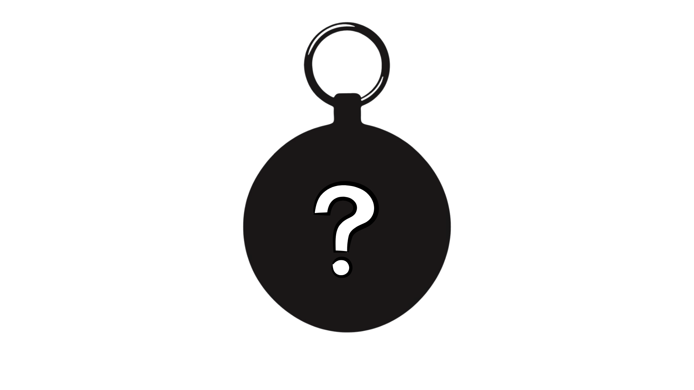

Hey, YOU!
Want to make something, bond with a friend, and earn prizes? Join Bound! Team up with a friend, ship up to 4 projects, and level up through stages to unlock cooler prizes at each stage! The catch? Both of you need to put in at least 4 hours per project. If one of you doesn't, neither of you levels up. So, will you and your friend make it to stage D?
How it works :)
Within Bound, there are 4 stages: A, B, C, and D. To complete each stage, you and your partner must ship a collaborative project, and each one of you must have spent at least 4 trackable hours (through either Hackatime or Lapse) working on the project. At most 1 of those hours can be spent on art. A collaborative project means both of you have pushed meaningful code to the same GitHub/GitLab repository. After completing each stage, you will level up to the next, and receive cool prizes!
Follow these steps!
Team up!
Team up with a partner, and brainstorm ideas of how you could both combine your skillsets to create some awesome projects! You can directly message people you know on Slack, or, better yet, convince a non Hack Club friend to join and get some cool stuff over on Pyramid Scheme. Have no one in mind? No problem! We can pair you up with someone that matches your skillset by submitting this form (TBD)!
Create!
Code, build hardware, and create art! Work together to make something awesome! Also, check out this section to learn how to use Git and save yourself some headaches with merge conflicts! Remember, all your project should live within the same repository!
Ship!
After finishing your project, and both you and your teammate having worked on it for at least 4 hours each, it's time to ship it! A shipped project must have a public GitHub/GitLab repository, a working demo link, and a short description of what you built. Submit it through our form (TBD) and level up!
Repeat!
Now, continue levelling up by submitting more projects! Remember, prizes only get cooler! You can continue working with your same teammate, find another one, or work on two different projects in parallel with two different people!
Prizes!
For every stage you complete, you will receive some cool custom Bound merch! Each item comes in two matching designs, one for you and one for your partner.
Stage A: Stickers!

Stage B: Custom Keychain!
Stage C: Bounded notebook! (get it? :p)
Stage D: A shirt! Who doesn't like shirts?
Plus, for each hour you go over the 4h minimum, you get a $5/h grant to spend on the Raspberry Pi shop, hosting, AI credits, or a custom domain!
Cool stuff you should check out! ( AKA Git )
Working collaboratively on a project can be hard, especially if it's something you've never done before. Luckily, Git exists, and it was invented just for that! Learning Git is not hard, and it can be an extremely useful skill to have! Check out the official Bound Guide (TBD), or check out this super helpful CS50x lecture, or if you are more into documentation, you can check out the official Git docs as well!
Q&A
Do I need a partner to join?
Yes! Bound is pairs only. You can find a partner through people you already know, or by convincing a friend outside Hack Club to join, or we can pair you up by completing this form.
Can I switch partners between projects?
Yep! Your stage is individual and independent from your partner's. You can team up with different people for each project, or even work on multiple projects in parallel with different partners at the same time.
What happens if my partner doesn't meet the 4 hour requirement?
If your partner doesn't hit 4 hours, neither of you can submit that project for the current stage. But don't worry, you can find a new partner to pick up where you left off, or you could submit your work to a different YSWS instead.
What counts as a collaborative project?
A project is collaborative if both participants have pushed real, meaningful code to the same shared GitHub or GitLab repository, and both contributions are part of the final product.
What do I do with hours beyond the 4h minimum?
Extra hours count toward a $5/h grant that you can spend on the Raspberry Pi shop, hosting, AI credits, or a custom domain. So keep working beyond those hours :p
Can someone at Stage D team up with someone at Stage A?
Absolutely! Stages track your own progress, not your team's. A Stage D participant and a Stage A participant can build together. Each of you will receive the prize for your own current stage upon submission.
Have another question?
Ask it #Bound-help and we will gladly help you!